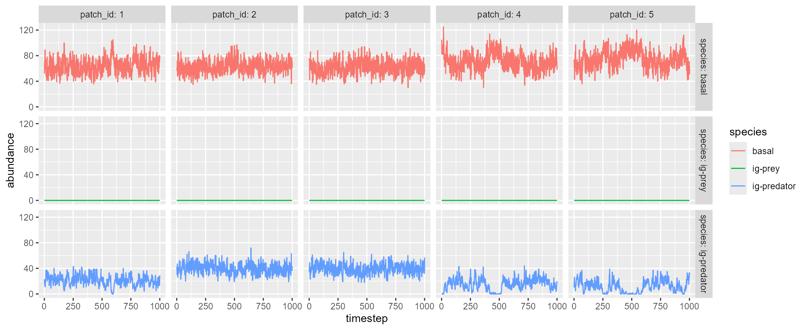

Basic usage
igpsim() simulates tri-trophic food web dynamics with
intraguild predation in space. The function employs a discrete
time-series model (an extension of the Nicholson-Bailey model), which is
detailed in Pomeranz
et al. 2023. The food web dynamics are simulated through (1) local
predator-prey interactions within a habitat patch, (2) immigration, and
(3) emigration.
The function returns:
-
df_dynamicsdata frame containing simulated food web dynamics*.-
timestep: time-step. -
patch_id: patch ID. -
carrying_capacity: carrying capacity at each patch. -
disturbance: disturbance-induced mortality at patch x and time-step t. -
species: species ID. -
abundance: abundance of species i at patch x. -
fcl: food chain length
-
-
df_speciesdata frame containing species attributes.-
species: species ID. -
mean_abundance: mean abundance (arithmetic) of species i across sites and time-steps. -
p_dispersal: dispersal probability of species i.
-
-
df_patchdata frame containing patch attributes.-
patch_id: patch ID. -
fcl: temporal average of food chain length. -
carrying_capacity: carrying capacity at each patch. -
disturbance: disturbance-induced mortality at each patch.
-
-
df_intdata frame containing interaction parameters.-
interaction: column identifying interaction pairs -
conv_eff: conversion efficiency -
attak_rate: attack rate -
handling_time: handling time
-
df_xy_coordxy coordinates for habitat patches (NULLwhendistance_matrixordispersal_matrixis provided)distance_matrixdistance matrix used in the simulation.
Quick start
The following script simulates tri-trophic dynamics with
n_patch = 5, which assumes five habitat patches randomly
distributed over a square space. By default, igpsim()
simulates food web dynamics with 200 warm-up (initialization with
species introductions: n_warmup), 200 burn-in (burn-in
period with no species introductions: n_burnin), and 1000
time-steps for records (n_timestep).
igp <- igpsim(n_patch = 5)As in mcsim(), the simulated dynamics can be visualized
by plot = TRUE, which will show five sample patches:
igp <- igpsim(n_patch = 5, plot = TRUE)
A named list of return values:
igp
#> $df_dynamics
#> # A tibble: 15,000 × 7
#> timestep patch_id carrying_capacity disturbance species abundance fcl
#> <dbl> <dbl> <dbl> <dbl> <fct> <dbl> <dbl>
#> 1 1 1 100 0 basal 69 2
#> 2 1 1 100 0 ig-prey 0 2
#> 3 1 1 100 0 ig-predator 20 2
#> 4 1 2 100 0 basal 74 2
#> 5 1 2 100 0 ig-prey 0 2
#> 6 1 2 100 0 ig-predator 41 2
#> 7 1 3 100 0 basal 74 2
#> 8 1 3 100 0 ig-prey 0 2
#> 9 1 3 100 0 ig-predator 15 2
#> 10 1 4 100 0 basal 53 2
#> # ℹ 14,990 more rows
#>
#> $df_species
#> # A tibble: 3 × 3
#> species mean_abundance p_dispersal
#> <fct> <dbl> <dbl>
#> 1 basal 62.8 0.1
#> 2 ig-prey 0 0.1
#> 3 ig-predator 28.2 0.1
#>
#> $df_patch
#> # A tibble: 5 × 4
#> patch_id fcl carrying_capacity disturbance
#> <dbl> <dbl> <dbl> <dbl>
#> 1 1 2 100 0
#> 2 2 2 100 0
#> 3 3 2 100 0
#> 4 4 2 100 0
#> 5 5 1.83 100 0
#>
#> $df_int
#> # A tibble: 3 × 4
#> interaction conv_eff attack_rate handling_time
#> <chr> <dbl> <dbl> <dbl>
#> 1 ig-prey on basal 0.9 0.05 0.5
#> 2 ig-predator on basal 0.9 0.05 0.5
#> 3 ig-predator on ig-prey 0.9 0.05 0.5
#>
#> $df_xy_coord
#> # A tibble: 5 × 2
#> x_coord y_coord
#> <dbl> <dbl>
#> 1 9.98 7.67
#> 2 7.08 7.66
#> 3 8.10 6.25
#> 4 9.21 9.22
#> 5 1.74 4.41
#>
#> $distance_matrix
#> 1 2 3 4 5
#> 1 0.000000 2.900548 2.349643 1.730506 8.859795
#> 2 2.900548 0.000000 1.741800 2.644437 6.251042
#> 3 2.349643 1.741800 0.000000 3.168715 6.624560
#> 4 1.730506 2.644437 3.168715 0.000000 8.889060
#> 5 8.859795 6.251042 6.624560 8.889060 0.000000Custom: brnet() + igpsim()
brnet() outputs are compatible with
igpsim(). For example, .$distance_matrix may
be used to inform arguments in igpsim(). By providing the
distance matrix, the following script will simulate food web dynamics in
a random branching network produced by brnet()
function:
patch <- 100
net <- brnet(n_patch = patch,
p_branch = 0.5,
plot = F)
igp <- with(net,
igpsim(n_patch = patch,
distance_matrix = distance_matrix,
plot = TRUE)
)
Custom: parameter detail
Users can tweak (1) food web attributes, (2) patch attributes, and (3) landscape structure.
Food web attributes
Arguments: r_b, conv_eff,
attack_rate, handling_time, s
Food web attributes are determined based on the maximum reproductive
rate of the basal species (r_b), conversion efficiency
conv_eff, attack rate attack_rate, handling
time handling_time, and switching parameter
s.
Basal species – r_b is one of the parameters
defining the population growth of the basal species, modeled as
follows:
\[ B_{t} = \frac{B_{t-1}r_b}{1 + \frac{r_b - 1}{K}B_{t-1}}, \]
where \(B_t\) is the abundance of
the basal species at time \(t\), \(r_b\) is the maximum growth rate (=
r_b), and \(K\) is the
carrying capacity (= carrying_capacity; see Patch
attributes). The parameters \(r_b\) and \(K\) may vary by habitat; to model such
variations, users may supply vectors of r_b and
carrying_capacity, whose length is equal to
n_patch. The function assumes these values are supplied in
order of patch 1, 2, 3, …, n_patch. Thus, care must be
taken to match this order with those in, e.g.,
distance_matrix.
Consumers (intraguild prey and predator) – The predator-prey
interactions are modeled with the Nicholson-Bailey model, which was
extended to account for intraguild predation (see Pomeranz
et al. 2023, Ecosphere; equations 5 – 9 for details). The function
assumes the discrete version of the Holling’s Type-II functional
response, in which attack rate (atttack_rate) and handling
time (handling_time) define the survival function \(f(\cdot)\) of the prey as follows:
\[ \begin{aligned} f(B, C) &= \exp(-\frac{a_{BC}C}{1 + a_{BC}h_{BC}B}) &&\text{C on B},\\ f(B, P) &= \exp(-\frac{(1 + \phi)a_{BP}P}{1 + a_{BP}h_{BP}B}) &&\text{P on B},\\ f(C, P) &= \exp(-\frac{(1 - \phi)a_{CP}P}{1 + a_{CP}h_{CP}C}) &&\text{P on C},\\ \end{aligned} \]
where \(C\) and \(P\) are the abundances of intraguild prey
and predator, respectively, \(a_{ij}\)
the attack rate of consumer \(j\) on
prey \(i\) (=
attack_rate), and \(h_{ij}\) the handling time (=
handling_time). If these arguments are supplied as scalars,
then the function assumes the constant values for all the interactions
(i.e., \(a_{BC} = a_{BP} = a_{CP} =
const.\) and \(h_{BC} = h_{BP} = h_{CP}
= const.\)). Where appropriate, users may apply different values
to these by supplying vectors; in this case, the function assumes the
parameter values appear in order of \(a_{BC}\) (\(h_{BC}\)), \(a_{BP}\) (\(h_{BC}\)), and \(a_{CP}\) (\(h_{CP}\)). The parameter \(\phi\) quantifies the switching tendency of
the intraguild predator, defined as follows:
\[ \phi = \frac{s(B - C)}{B+C} \]
The parameter \(s\) (=
s) determines the likelihood of switching to the basal
species, with higher values of \(s\)
indicating the greater switching tendency to the basal species. Lastly,
conversion efficiency (= conv_eff) quantifies the
effectiveness of consumers transforming the capture prey into consumer’s
abundance. conv_eff must be a scalar (supply identical
values to all the interactions) or must be supplied in order of \(BC\), \(BP\), and \(CP\).
Note that the function assumes the following order of ecological events: \(B\)’s reproduction \(\rightarrow\) \(C\)’s predation on \(B\) \(\rightarrow\) \(C\)’s reproduction \(\rightarrow\) \(P\)’s predation on \(B\) and \(C\) \(\rightarrow\) \(P\)’s reproduction.
Patch attributes
Arguments: carrying_capacity
p_disturb, i_disturb,
phi_disturb
Patch attributes are characterized by carrying capacity (=
carrying_capacity) and disturbance (probability of
occurrence = p_disturb, disturbance intensity =
i_disturb, temporal precision of disturbance intensity =
phi_disturb). carrying_capacity and
i_disturb can be supplied as patch specific values,
provided that the vector lengths match n_patch. The other
arguments p_disturb and phi_disturb should be
given as scalars. p_disturb controls how often disturbance
occurs, while phi_disturb regulates the temporal
variability of the disturbance intensity when it occurs (greater values
of phi_disturb indicating less
temporal variability).
Note that disturbance events in this function is designed to resemble
regional disturbance, which affects all habitat patches when it occurs.
Thus, disturbance heterogeneity within a landscape should be introduced
through i_disturbance argument if desired.
Landscape attributes
Arguments: xy_coord,
distance_matrix, landscape_size,
theta
See Article for mcsim()
Model description
Full model descriptions are available at Pomeranz et al. 2023, Ecosphere.